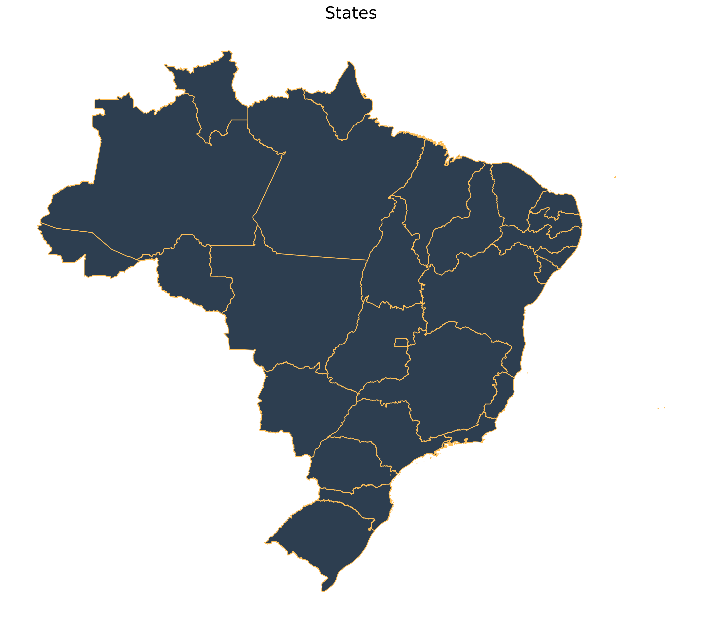
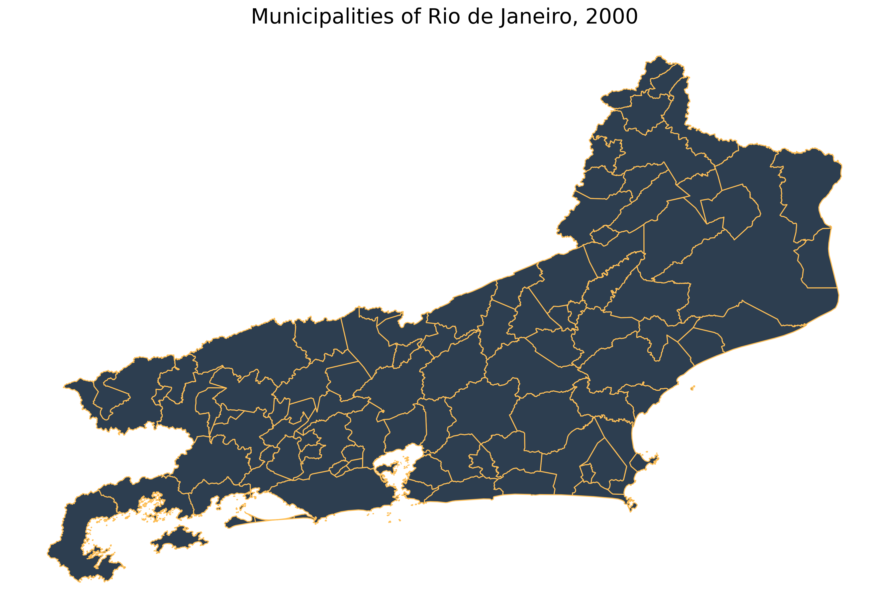
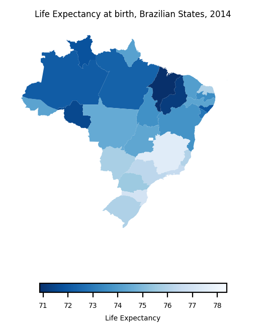

Introduction to geobr (Python)
Source:vignettes/python-intro/py-intro-to-geobr.Rmd
py-intro-to-geobr.RmdThe geobr package provides quick and easy access to official spatial data sets of Brazil. The syntax of all geobr functions operate on a simple logic that allows users to easily download a wide variety of data sets with updated geometries and harmonized attributes and geographic projections across geographies and years. This vignette presents a quick intro to geobr.
Installation
You can install geobr from PyPI:
pip install geobr
Now let’s load the libraries we’ll use in this vignette.
General usage
Available data sets
The geobr package covers 27 spatial data sets, including a variety of
political-administrative and statistical areas used in Brazil. You can
view what data sets are available using the list_geobr()
function.
Function: read_country
Geographies available: Country
Years available: 1872, 1900, 1911, 1920, 1933, 1940, 1950, 1960, 1970, 1980, 1991, 2000, 2001, 2010, 2013, 2014, 2015, 2016, 2017, 2018, 2019
Source: IBGE
------------------------------
Function: read_region
Geographies available: Region
Years available: 2000, 2001, 2010, 2013, 2014, 2015, 2016, 2017, 2018, 2019
Source: IBGE
------------------------------
Function: read_state
Geographies available: States
Years available: 1872, 1900, 1911, 1920, 1933, 1940, 1950, 1960, 1970, 1980, 1991, 2000, 2001, 2010, 2013, 2014, 2015, 2016, 2017, 2018, 2019
Source: IBGE
------------------------------
Function: read_meso_region
Geographies available: Meso region
Years available: 2000, 2001, 2010, 2013, 2014, 2015, 2016, 2017, 2018, 2019
Source: IBGE
------------------------------
Function: read_micro_region
Geographies available: Micro region
Years available: 2000, 2001, 2010, 2013, 2014, 2015, 2016, 2017, 2018, 2019
Source: IBGE
------------------------------
Function: read_intermediate_region
Geographies available: Intermediate region
Years available: 2017, 2019
Source: IBGE
------------------------------
Function: read_immediate_region
Geographies available: Immediate region
Years available: 2017, 2019
Source: IBGE
------------------------------
Function: read_weighting_area
Geographies available: Census weighting area (área de ponderação)
Years available: 2010
Source: IBGE
------------------------------
Function: read_census_tract
Geographies available: Census tract (setor censitário)
Years available: 2000, 2010
Source: IBGE
------------------------------
Function: read_municipal_seat
Geographies available: Municipality seats (sedes municipais)
Years available: 1872, 1900, 1911, 1920, 1933, 1940, 1950, 1960, 1970, 1980, 1991, 2010
Source: IBGE
------------------------------
Function: read_statistical_grid
Geographies available: Statistical Grid of 200 x 200 meters
Years available: 2010
Source: IBGE
------------------------------
Function: read_metro_area
Geographies available: Metropolitan areas
Years available: 1970, 2001, 2002, 2003, 2005, 2010, 2013, 2014, 2015, 2016, 2017, 2018
Source: IBGE
------------------------------
Function: read_urban_area
Geographies available: Urban footprints
Years available: 2005, 2015
Source: IBGE
------------------------------
Function: read_amazon
Geographies available: Brazil's Legal Amazon
Years available: 2012
Source: MMA
------------------------------
Function: read_biomes
Geographies available: Biomes
Years available: 2004, 2019
Source: IBGE
------------------------------
Function: read_conservation_units
Geographies available: Environmental Conservation Units
Years available: 201909
Source: MMA
------------------------------
Function: read_disaster_risk_area
Geographies available: Disaster risk areas
Years available: 2010
Source: CEMADEN and IBGE
------------------------------
Function: read_indigenous_land
Geographies available: Indigenous lands
Years available: 201907
Source: FUNAI
------------------------------
Function: read_semiarid
Geographies available: Semi Arid region
Years available: 2005, 2017
Source: IBGE
------------------------------
Function: read_health_facilities
Geographies available: Health facilities
Years available: 2015
Source: CNES, DataSUS
------------------------------
Function: read_health_region
Geographies available: Health regions
Years available: 1991, 1994, 1997, 2001, 2005, 2013
Source: DataSUS
------------------------------
Function: read_neighborhood
Geographies available: Neighborhood limits
Years available: 2010
Source: IBGE
------------------------------
Function: read_schools (dev)
Geographies available: Schools
Years available: 2020
Source: INEP
------------------------------Download spatial data as GeoDataFrames
The syntax of all geobr functions operate on the same logic, so the code to download the data becomes intuitive for the user. Here are a few examples.
Download a specific geographic area at a given year
# State of Sergige
state = geobr.read_state(code_state="SE", year=2018)
# Municipality of Sao Paulo
muni = geobr.read_municipality(code_muni=3550308, year=2010)Download all geographic areas within a state at a given year
# All municipalities in the state of Alagoas
muni = geobr.read_municipality(code_muni="AL", year=2007)
# All census tracts in the state of Rio de Janeiro
cntr = geobr.read_census_tract(code_tract="RJ", year=2010)If the parameter code_ is not passed to the function,
geobr returns the data for the whole country by default.
Important note about data resolution
All functions to download polygon data such as states, municipalities
etc. have a simplified argument. When
simplified=False, geobr will return the original data set
with high resolution at detailed geographic scale (see documentation).
By default, however, simplified=True and geobr returns data
set geometries with simplified borders to improve speed of downloading
and plotting the data.
Plot the data
Once you’ve downloaded the data, it is really simple to plot maps
using matplotlib.
# Plot all Brazilian states
fig, ax = plt.subplots(figsize=(15, 15), dpi=300)
states.plot(facecolor="#2D3E50", edgecolor="#FEBF57", ax=ax)
ax.set_title("States", fontsize=20)
ax.axis("off")(-76.24758052685, -26.590708254149995, -35.70232894755864, 7.22299203073151)
Plot all the municipalities of a particular state, such as Rio de Janeiro:
# plot
fig, ax = plt.subplots(figsize=(15, 15), dpi=300)
all_muni.plot(facecolor="#2D3E50", edgecolor="#FEBF57", ax=ax)
ax.set_title("Municipalities of Rio de Janeiro, 2000", fontsize=20)
ax.axis("off")(-45.08586065211478,
-40.7619784166046,
-23.499218287945578,
-20.632919136978526)
Thematic maps
The next step is to combine data from geobr package with other data sets to create thematic maps. In this example, we will be using data from the (Atlas of Human Development (a project of our colleagues at Ipea) to create a choropleth map showing the spatial variation of Life Expectancy at birth across Brazilian states.
Merge external data
First, we need a DataFrame with estimates of Life
Expectancy and merge it to our spatial database. The two-digit
abbreviation of state name is our key column to join these two
databases.
# Read DataFrame with life expectancy data
data_url = "https://raw.githubusercontent.com/ipeaGIT/geobr/master/r-package/inst/extdata/br_states_lifexpect2017.csv"
df = pd.read_csv(data_url, index_col=0)
states["name_state"] = states["name_state"].str.lower()
df["uf"] = df["uf"].str.lower()
# join the databases
states = states.merge(df, how="left", left_on="name_state", right_on="uf")Plot thematic map
plt.rcParams.update({"font.size": 5})
fig, ax = plt.subplots(figsize=(4, 4), dpi=200)
states.plot(
column="ESPVIDA2017",
cmap="Blues_r",
legend=True,
legend_kwds={
"label": "Life Expectancy",
"orientation": "horizontal",
"shrink": 0.6,
},
ax=ax,
)
ax.set_title("Life Expectancy at birth, Brazilian States, 2014")
ax.axis("off")(-76.24758052684999,
-26.590708254149995,
-35.70232894755864,
7.222992030731511)